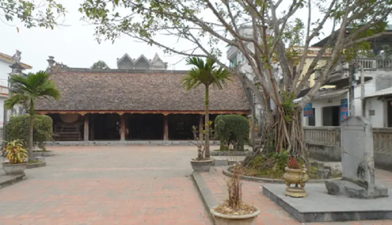

Trạng Quỳnh có thật, nhưng phần lớn giai thoại thì không
Người được gọi là Trạng Quỳnh chưa bao giờ đỗ Trạng nguyên. Ông đỗ đầu kỳ thi Hương năm 1696, rồi thi Hội nhiều lần đều hỏng.

Trong một kỳ thi Hương, theo giai thoại, thí sinh Quỳnh làm bài xong sớm, thấy còn thừa giấy, bèn vẽ một bầy voi rồi đề thơ chế giễu quan trường: "Văn chương phú lục đã xong rồi / Thừa giấy làm chi chẳng vẽ voi?". Nhưng chuyện ấy không có trong sử sách nào. Điều có thật thì khác hẳn, và có lẽ còn thú vị hơn.
Ông Cống làng Bột Thượng
Nhân vật được cho là gốc của Trạng Quỳnh là Nguyễn Quỳnh (1677-1748), một danh sĩ thời Lê Trung Hưng. Ông còn tên Thưởng, hiệu Ôn Như, quê làng Bột Thượng, Hoằng Hóa, Thanh Hóa, nay thuộc xã Hoằng Lộc. Ông học chữ với ông nội và cha, người cha từng là giám sinh Quốc Tử Giám.
Năm 1696, Nguyễn Quỳnh đỗ Giải nguyên, tức đỗ đầu kỳ thi Hương. Ông thi Hội nhiều lần nhưng đều hỏng, nên chỉ mang học vị Hương cống, vì thế còn được gọi là Cống Quỳnh. Ông làm giáo thụ ở các huyện Thạch Thất, Phúc Lộc thuộc Sơn Tây, rồi làm huấn đạo phủ Phụng Thiên ở Thăng Long. Năm 1718 ông đỗ khoa Sĩ vọng, được bổ tri phủ Thái Bình, sau về làm Viên ngoại lang Bộ Lễ, rồi bị giáng xuống làm Tu soạn ở Viện Hàn lâm.
Học giỏi thật, chỉ thiếu bằng
Không đỗ đại khoa, nhưng tiếng học giỏi của ông có thật. Người đương thời có câu "Nguyễn Quỳnh, Nguyễn Nham, thiên hạ vô tam", nghĩa là thiên hạ không có người thứ ba giỏi như hai ông. Sách Nam Thiên lịch đại tư lược sử nhận xét ông văn chương nổi tiếng, nói năng khiến người kinh ngạc, thạo quốc âm và giỏi hài hước.
Tác phẩm còn lại của ông gồm một số bài ký, bài văn tế mẹ, bài văn khóc người em mất năm 14 tuổi, và hai bài phú chép trong tập Lịch triều danh phú. Tập này tuyển văn của các danh sĩ, hầu hết đỗ đại khoa. Chỉ có hai người đỗ Hương cống được chọn: Nguyễn Quỳnh và Đặng Trần Côn.
Nổi tiếng nhất là chuyện món "mầm đá": Quỳnh để chúa chờ đến đói rã ruột, rồi dâng cơm trắng với một lọ đề hai chữ "Đại Phong".
Vì sao lại là "Trạng"?
Trong tiếng Việt dân gian, "Trạng" không nhất thiết là người đỗ đầu thi Đình. Ở miền Bắc Trung Bộ, người ta còn dùng chữ "trạng" để chỉ người hay ra vẻ, thích khoe, như trong câu cảm thán "trạng hè!". Một người đỗ Cống mà nói năng sắc sảo, hay châm chọc quan lại, rất dễ được dân gian phong làm Trạng.
Từ đó, các truyện Trạng Quỳnh kể ông bỡn cợt vua Lê, chúa Trịnh, sứ phương Bắc và đám quan trường. Nổi tiếng nhất là chuyện món "mầm đá": Quỳnh để chúa chờ đến đói rã ruột, rồi dâng cơm trắng với một lọ đề hai chữ "Đại Phong". Gió lớn thì đổ chùa, đổ chùa thì tượng lo, "tượng lo" nói lái thành "lọ tương". Chuyện đối đáp với sứ Tàu còn kéo cả nữ sĩ Đoàn Thị Điểm vào vai cô hàng nước.
Sử sách chép gì
Các nguồn về Nguyễn Quỳnh chỉ ghi khoa cử, chức vụ và văn chương. Truyện Trạng Quỳnh là văn học dân gian, có nhiều dị bản và được thêm thắt qua nhiều đời. Ngay vi.wikipedia cũng lưu ý nội dung các giai thoại có thể khác nhau tùy phiên bản. Việc ông là bạn thơ của Đoàn Thị Điểm cũng chỉ là "tương truyền".
Cái chết của Trạng trong truyện là phần khó tin nhất. Truyện kể chúa Trịnh mời Quỳnh dự yến để đầu độc. Biết trước, Quỳnh dặn vợ con khi ông chết thì chưa được phát tang, cứ đặt ông nằm võng, có người quạt, gọi nhà trò về hát. Chúa sai người dò, thấy Quỳnh vẫn "nằm nghe hát", tưởng thuốc không độc, bèn nếm thử và chết theo. Từ đó có câu "Trạng chết, Chúa cũng băng hà". Không có tư liệu chính thống nào ghi một chúa Trịnh chết theo cách ấy.
Chi tiết bên lề: một dòng họ trạng
Dân gian không dừng lại ở một người. Một nhân vật hài hước khác là Xiển Bột, được cho là một người có thật tên Nguyễn Xiển, sống cuối thời phong kiến, làm nghề thuốc. Ông được gọi là Xiển Bột vì quê ở làng Hoằng Bột, nay cũng thuộc xã Hoằng Lộc, và truyện kể gán ông làm chắt của Trạng Quỳnh. Một giai thoại kể vua tuần du ra Thanh Hóa, nghe nói con cháu Trạng Quỳnh còn sống, bèn cho đòi Xiển đến hỏi chuyện. Cái tài bỡn cợt, theo dân gian, cũng được truyền theo dòng họ.
Dư âm đến hôm nay
Nhà nước đã xây nhà lưu niệm Trạng Quỳnh tại quê ông ở Hoằng Lộc. Đáng chú ý, nhà lưu niệm mang tên nhân vật dân gian, không phải tên vị Hương cống. Chữ "trạng" theo nghĩa người hay ra vẻ, hay khoe vẫn sống trong tiếng nói hằng ngày ở miền Bắc Trung Bộ.
Nguyễn Quỳnh là người có thật, đỗ Giải nguyên và làm quan nhỏ dưới triều Lê. Trạng Quỳnh là nhân vật do nhiều thế hệ người kể chuyện cùng viết nên.